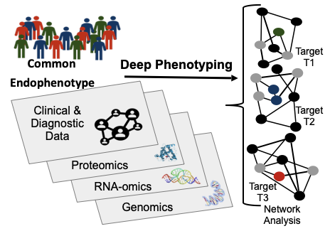

The concept:

Image concept credit: Leopold Jane A., and Loscalzo Joseph. “Emerging Role of Precision Medicine in Cardiovascular Disease.” Circulation Research, vol. 122, no. 9, Apr. 2018, pp. 1302–15. ahajournals.org (Atypon), doi:10.1161/CIRCRESAHA.117.310782.